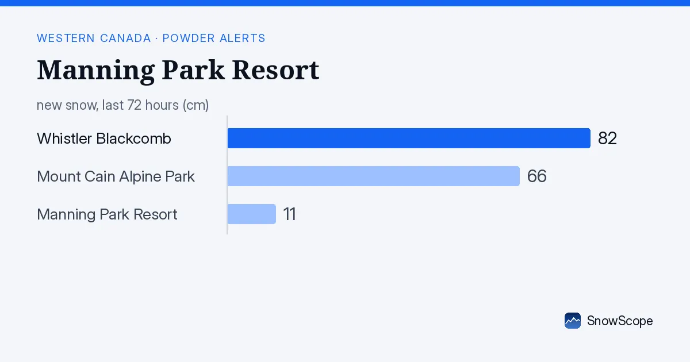

Manning Park Resort 22 percent of normal; peak snow weeks 12-14
Manning Park Resort holds the least snow of three main resorts in this region, with just 31 cm on the upper slopes after 11 cm fell over the last three days. Historically, the deepest snow here arrives in weeks 12 to 14; for now, the site sits at 22 percent of normal for mid-November.
See the live snow forecast for Manning Park Resort in the SnowScope appSnow depth, powder alerts and the 3D map, free.
Fresh snow fell across the high country
Three distinct storm cells moved through Western Canada in the past 72 hours. The heaviest snow fell in the northern interior: near Ski Callaghan, models show 118 cm of new depth; Mount Washington Alpine Resort, 23 km away, recorded 116 cm in the same period.
Sasquatch, to the south, received only 33 cm. As systems move inland from the Pacific, they lose moisture and energy, so snow totals decline with distance from the ocean toward lower elevations in the south. This is why Manning Park, which sits further inland and south, received less.
| Resort | Snow depth | New snow, 72 h | Coming, next days | Top |
|---|---|---|---|---|
| Whistler Blackcomb | 138 cm | 82 cm | 13 cm | 2,259 m |
| Mount Cain Alpine Park | 97 cm | 66 cm | 9 cm | 1,616 m |
| Manning Park Resort | 31 cm | 11 cm | 2 cm | 1,789 m |

Whistler Blackcomb leads by a large margin
Whistler Blackcomb received the most snow in the region, with 82 cm of new snow in 72 hours and now 138 cm on the upper slopes. Mount Cain Alpine Park also fared well with 66 cm new snow and 97 cm total on upper slopes.
Manning Park received only 11 cm, leaving 31 cm on upper slopes. The gap between these resorts reflects their locations: Whistler sits at 653 m base and 2,259 m summit and sits north and west, tall enough to squeeze moisture from passing systems. Manning Park's base is 1,359 m; it sits in a rain shadow to the south.
Regional snow cover declined but should recover
The region as a whole lost ground in the past two days. Snow-covered area fell from 258,160 km² on 2026-11-13 to 253,880 km² today as lower elevations thawed in milder air.
The number of resorts with snow held steady at 41 out of 57 total. However, another system is moving in and forecast to arrive by 2026-11-18, when the region is modelled to expand to 298,900 km² of snow cover. This pattern—systems bringing snow to high terrain, followed by warm spells—is typical in November.
Manning Park shows why elevation and aspect matter
Only 11 cm fell at Manning Park over three days, leaving the upper slopes at 31 cm total. Breaking this down by elevation: at the summit (1,789 m), the model shows 17 cm; at mid-elevation (1,574 m), just 7 cm; at the base (1,359 m), only 1 cm.
For mid-November, 7 cm at mid-elevation is just 19 percent of the usual depth. The freezing level on 2026-11-15 ranged from 1,290 m to 1,680 m, meaning the temperature hovered near the snow-to-rain boundary at mid-slope during part of the day. South-facing slopes likely received wet snow or rain.
The best weeks historically are March and April
At Manning Park, records show that deep snow arrives in weeks 12 to 14, which span late March and early April. The usual depth here in mid-November is 37 cm at mid-elevation; today's 7 cm is 19 percent of normal.
This gap will close gradually as systems arrive through December and January, then more rapidly as spring systems inject moisture. Early season snow is sparse everywhere on dry mountains; patience is required. For skiers planning a November trip, focus on higher resorts like Whistler or Mount Cain, which have better conditions.
More snow is forecast; rocks may still be near
Another 2 cm is expected at Manning Park on 2026-11-16, with the freezing level dropping sharply to 590 m to 1,560 m—a sign of colder, drier air. After 2026-11-16, models show no precipitation until the next system.
When snow is this thin (31 cm on upper slopes), rocks and vegetation are close to the surface. If you venture off-piste, check the official avalanche bulletin for your area first. Early-season powder skiing requires careful route-finding and conservative decision-making.
Tips for skiers
- At the highest elevations (above 1,750 m), rocks and vegetation are close to the surface; stay on established routes and move slowly. Thin coverage hides obstacles.
- South-facing slopes at mid-elevation (1,500–1,700 m) may have received rain or wet snow when the freezing level reached 1,680 m on 2026-11-15. North-facing slopes with fresh powder are safer; check aspect carefully.
- Skip the base areas entirely; at 1,359 m elevation, models show only 1 cm depth. All skiable snow is above 1,500 m; plan your route accordingly.
- Before going off-piste, check the official avalanche bulletin for your area. Early-season snow is thin and irregular, with weak layering over frozen ground; stability cannot be assumed.
- If Manning Park's thin snow discourages you, consider a drive north. Whistler has 138 cm and Mount Cain has 97 cm, 100+ km away. The elevation gain and latitude make a large difference in mid-November.
About these numbers
Resort snow depths are the deepest snow on the resort's upper slopes from the SnowScope snow model (about 1 km, run of 15 November); they are estimates for an area, not a measurement at one point. Station values are measurements on the date shown. Forecasts can change. Always read the official avalanche bulletin before going off-piste.
Official avalanche bulletins: Avalanche Canada
Cite this report
For research, teaching or the press: the numbers and charts are free to reuse under CC BY 4.0 with this citation.
SnowScope (2026), Manning Park Resort 22 percent of normal; peak snow weeks 12-14, https://snowscope.app/blog/en/2026/11/western-canada-manning-park-resort-fresh-snow-powder-alert-15-november-2026.html, accessed 2026-11-15
SnowScope (Atlas Labs). (2026, November 15). Manning Park Resort 22 percent of normal; peak snow weeks 12-14. SnowScope snow reports. https://snowscope.app/blog/en/2026/11/western-canada-manning-park-resort-fresh-snow-powder-alert-15-november-2026.html
BibTeX
@misc{snowscope2026westerncanadamanningpark,
author = {{SnowScope (Atlas Labs)}},
title = {Manning Park Resort 22 percent of normal; peak snow weeks 12-14},
year = {2026},
month = nov,
howpublished = {\url{https://snowscope.app/blog/en/2026/11/western-canada-manning-park-resort-fresh-snow-powder-alert-15-november-2026.html}},
note = {Published 2026-11-15 16:33 UTC; accessed 2026-11-15}
}· CC BY 4.0 · Methods, data and tools →
Manning Park Resort: snow and temperature by height, this winter vs last (tools) →
Follow Manning Park Resort
Free: a message when fresh snow is coming, and the forecast every morning.
More snow reports

Manning Park leads western Canada with 120 cm on November 13, 34 cm ahead of Big White, confirmed by early November satellite observations.

Whistler Blackcomb forecast to gain 47 centimetres by Saturday as snow arrives Thursday through the region, according to our model run on 4 November.

Western Canada mountains carry 42% of their normal snow for mid-November as of 12 November, but 142 cm is forecast over the next two weeks.